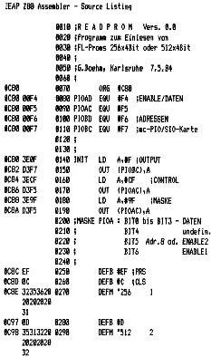

80-Bus Journal |
April/Mai/Juni 1984 · Ausgabe 2 |
Das Hisoft Pascal 4T wird in einem eigenen Cassettenformat geliefert, und benoetigt einen eigenen Loader um es zu laden. Dieser Loader hat die unangenehme Eigenschaft einen Autostart durchzufuehren. Dies waere nicht erwaehnenswert, wenn nicht das Pascal gleich nach dem Start, nach einigen Fragen zur Speicheraufteilung, sich selbst an eine neue Stelle im Speicher legt, bevor man mit Nassys Back-up Kopien erstellen kann. Nachtraegliche Kopien entsprechen stets der gewaehlten Speicheraufteilung.
Um also eine original Kopie des HP4T einschliesslich der Relokatortabelle mit Nassys machen zu koennen, ist folgende Prozedur noetig:
In der Nassys Workspace wird eine 80H in 0C75H (bei Nassys 3) eingetragen. Dies ist die einfachste Moeglichkeit einen Autostart von Objektprogrammen im ‚G‘ Format zu verhindern. Hiermit wird die serielle Schnittstelle in der Eingabe abgeschaltet, und das E xxxx auf dem Band bleibt ohne Wirkung. Nun kann man nach Laden des HP4T Loader mit ‚R‘ die Cassette stoppen und folgendes eingeben:
| B 0CCD | Breakpoint nach letztem Block |
| E 0C80 | Start des Loaders |
| Start der Cassette | |
| Nach einigen Minuten meldet sich Nassys mit der Breakpointanzeige und man gibt ein: | |
| B 0CD3 | Break auf RET; hier =JP 1000 |
| E | ausfuehren bis Break |
| und nun das File retten mit | |
| W 1000 6300 | aber nun bitte nicht mit 300 Baud !! |
Der Kaltstart einschliesslich der Reloziierung ist nun 1000 H. Nach dem Start bei 1000 H ist die Adresse 1000 H die Startadresse fuer Pascal Objektprogramme, ein weiterer Start bei 1000 H ist also unmoeglich. Kalt- und Warmstart sind dann 101F und 1021 H.
Wer im Hisoft Pascal 4T das Control ‚C‘ als ungewohnt empfindet und lieber ESCAPE als Break Funktion mag, kann im original File vor dem Reloziieren folgendes aendern: Die Speicherstellen 133A,1513,192F,2A65, 3FEC, 4AD7, 4C5E und 544D sind von 03 auf 1B zu aendern.
Sowohl bei der Grafikkarte, als auch bei der FDC- Karte werden PROMs verwendt. Wenn beim Testen Fehler auftreten, ist man sich nicht sicher, ob nicht etwa die PROMs falsch programmiert oder einfach kaputt sind.
Deshalb habe ich mir ein einfaches Programm geschrieben, das den Inhalt der PROMs ausliest.
Die Hardware ist extrem einfach: sie besteht nur aus einem Flachbandkabel, das einen PROM-Sockel mit den entsprechenden Pins eines PIO-Ausgangs verbindet.
Wenn Sie auf eine genauere Beschreibung der Hardware- Anschlüsse scharf sind, drucke ich gerne eine Verbindung der entsprechenden Stecker ab.
Ansonsten dürfte das Listing selbst genügend Auskunft geben.
| Seite 50 von 52 |
|---|